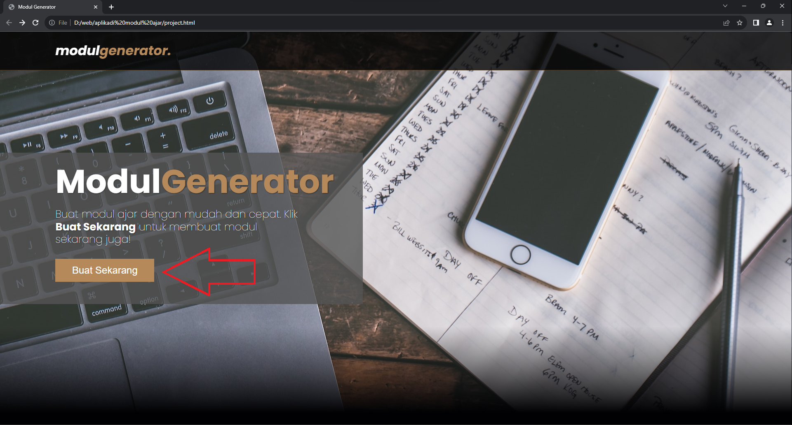
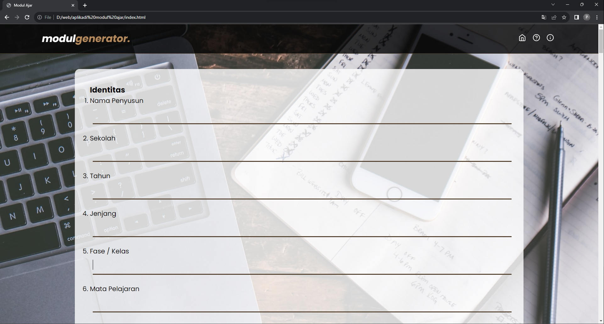
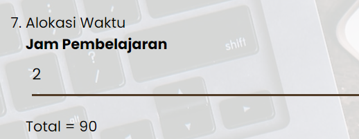
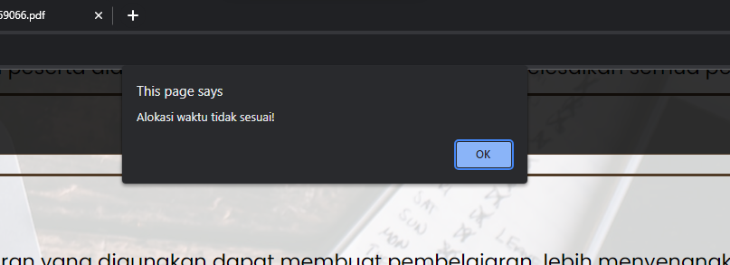
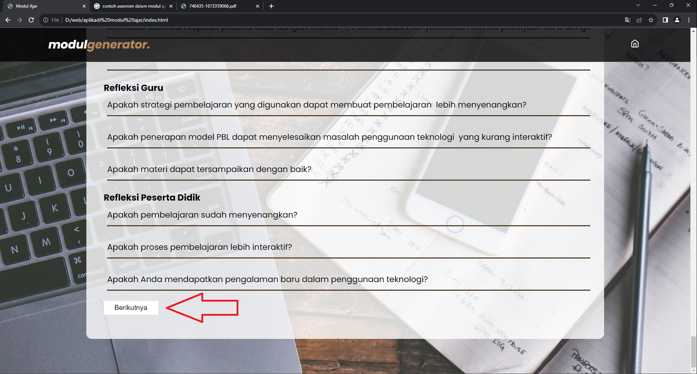

Pada menu home, klik buat sekarang untuk membuat modul ajar.

Kemudian akan muncul halaman seperti pada gambar. Kemudian isi semua
form sesuai dengan kebutuhan mulai dari identitas sampai refleksi.

Pada alokasi waktu isikan jam pembelajaran dalam satu pertemuan
(tuliskan dalam bentuk angka misal : 2), kemudian dibawahnya akan
muncul jumlah jam pelajaran dalam untuk satu pertemuan.

Di bagian model pembelajaran pilih salah satu dari opsi tersebut,
kemudian sintak akan muncul di kegiatan inti sesuai dengan model
yang dipilih.
Kemudian pada bagian kegiatan pembelajaran inputkan alokasi waktu
pada setiap kegiatan. Total alokasi waktu harus sesuai dengan JP
yang sudah diinputkan pada identitas. Jika total alokasi waktu lebih
kecil atau lebih besar dari JP maka muncul pesan “Alokasi waktu
tidak sesuai.”

Jika semua sudah tersisi klik tombol berikutnya

Jika ingin kembali ke menu sebelumnya untuk mengedit klik tombol
kembali.
Untuk download menjadi dokumen pdf klik tombol download lalu pilih
save as pdf.